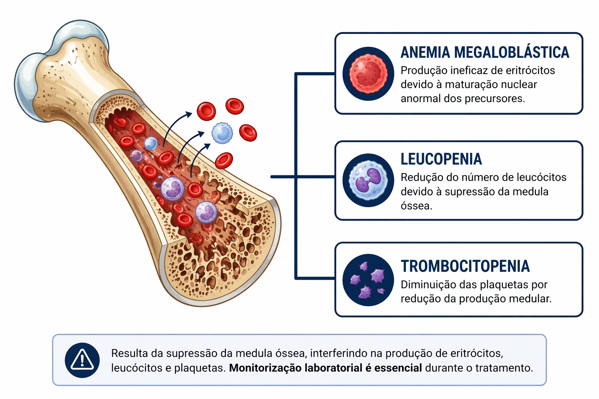

Inibidores da via do folato
Os antibacterianos que interferem na via metabólica do folato exploram uma diferença importante entre bactérias e células humanas. Muitas bactérias sintetizam folato de novo, enquanto o organismo humano depende predominantemente da ingestão dietética dessa vitamina. Essa distinção permite bloquear etapas da síntese de nucleotídeos bacterianos sem inibir diretamente a produção de folato no hospedeiro 1,2.
Entretanto, o metabolismo do folato participa de processos celulares humanos fundamentais, especialmente aqueles relacionados à síntese de DNA e à divisão celular. Quando ocorre interferência significativa nessa via, tecidos com elevada taxa proliferativa tornam-se mais suscetíveis a alterações funcionais 2.
Clinicamente, essa vulnerabilidade pode se manifestar por alterações hematológicas, como anemia megaloblástica, leucopenia ou trombocitopenia, sobretudo em tratamentos prolongados, em pacientes com deficiência nutricional prévia ou em uso concomitante de medicamentos que também interferem na hematopoese 17.

A associação sulfametoxazol–trimetoprim ilustra esse mecanismo. O trimetoprim atua inibindo a diidrofolato redutase bacteriana, mas pode exercer interferência parcial em enzimas humanas relacionadas ao metabolismo do folato quando a exposição é prolongada ou quando há redução da depuração do fármaco. As alterações hematológicas geralmente são reversíveis após a suspensão do medicamento, mas terapias prolongadas podem exigir monitorização laboratorial 17.
Outro efeito clinicamente relevante associado ao trimetoprim é a hipercalemia. Esse fármaco pode atuar de forma semelhante ao diurético amilorida, bloqueando o canal epitelial de sódio no túbulo distal, reduzindo a excreção renal de potássio. O risco aumenta em pacientes idosos, portadores de insuficiência renal ou em uso concomitante de medicamentos que também elevam o potássio sérico, como inibidores da enzima conversora da angiotensina, bloqueadores do receptor de angiotensina ou espironolactona 2.
Sulfonamidas também podem estar associadas a reações cutâneas de hipersensibilidade. Embora incomuns, manifestações mucocutâneas graves podem ocorrer, especialmente nas primeiras semanas de tratamento 17.
Do ponto de vista fisiopatológico, a relação entre mecanismo e evento adverso mantém-se coerente, ou seja, o bloqueio da síntese bacteriana de folato pode, em determinadas condições, interferir em processos humanos dependentes dessa via metabólica ou em mecanismos renais envolvidos na homeostase eletrolítica.